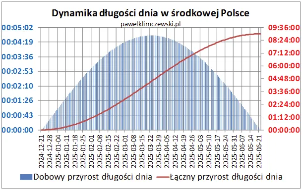
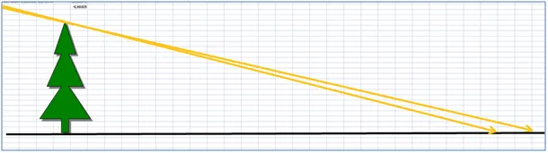
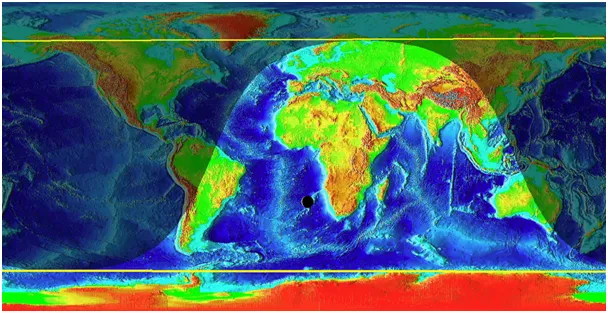

Na Nowy Rok o barani skok.
Już tylko 12 tygodni do równonocy, pierwszego dnia wiosny. Ruchem obrotowym rządzą sinus lub/i cosinus, dlatego zmiany w trakcie całego cyklu nie przebiegają w tym samym tempie. Funkcje te rozpędzają się powoli jak parowóz i podobnie długo hamują. Od przesilenia zimowego minął już pierwszy tydzień i czerwona linia "odkleiła" się od zera, co oznacza, że długość dni będzie zauważalnie rosnąć. Słońce każdego dnia wspina się wyżej nad horyzont coraz bardziej ogrzewając północną półkulę.

Mimo to dzień jest ciągle za krótki, aby zbilansować straty nocnego wychłodzenia stąd do marca panuje w naszym rejonie zima. Jak widzimy na wykresie niebieskim już za tydzień dobowy przyrost długości dnia przekroczy minutę na dobę. Przyrosty każdego dnia się dodają do poprzednich stąd już 21 marca dzień będzie dłuższy o 4,5 h a w czerwcu o 9 h. Takie atrakcje mamy tylko w strefie umiarkowanej. Na równiku przez cały rok każda doba jest identyczna, dzień i noc mają po 12 godzin. Nuda! Jeszcze gorzej jest w okolicach okołobiegunowych, trwa tam wielomiesięczny dzień lub noc polarne.

Mimo, że Słońce na Nowy Rok tylko o stopień jest wyżej na niebie to 7 metrowe drzewo daje cień krótszy o 1 metr. Właśnie tak nieintuicyjne są funkcje trygonometryczne, dlatego warto sobie to czasem policzyć. Ten metr to barani skok małego barana, ale już na Trzech Króli cień tego drzewa będzie krótszy o 1,7 m a to oznacza istotnie więcej energii słonecznej dla naszej półkuli.

Mantra: Słońce nie ogrzewa przeźroczystego powietrza, ogrzewa lądy i oceany a te emitując podczerwień podgrzewają powietrze. Kluczowe, ponad 90% znaczenie ma w tym procesie para wodna (H2O), dwutlenek węgla (CO2) ma swój pomijalny, marginalny udział z dwóch powodów:
a/jest go setki razy mniej niż pary wodnej,
b/ ma znacznie mniejsze ciepło właściwe od pary i tlenu oraz azotu. Oznacza to, że CO2 przekazując swoje ciepło gazom niecieplarnianym stygnie w swej masie szybciej niż podgrzewa się tlen i azot. Amen.
Paweł Klimczewski